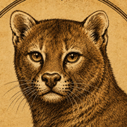
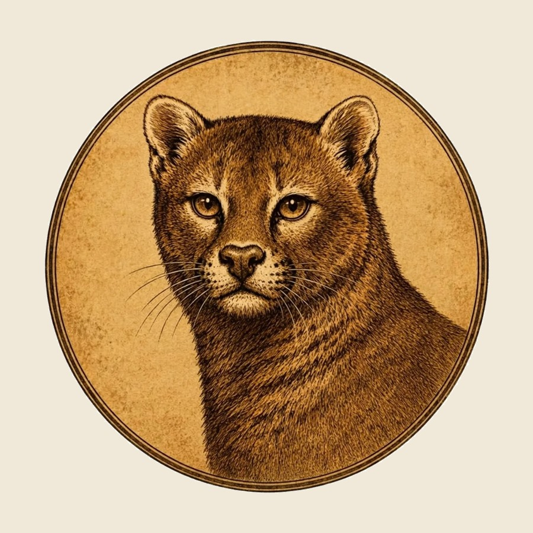
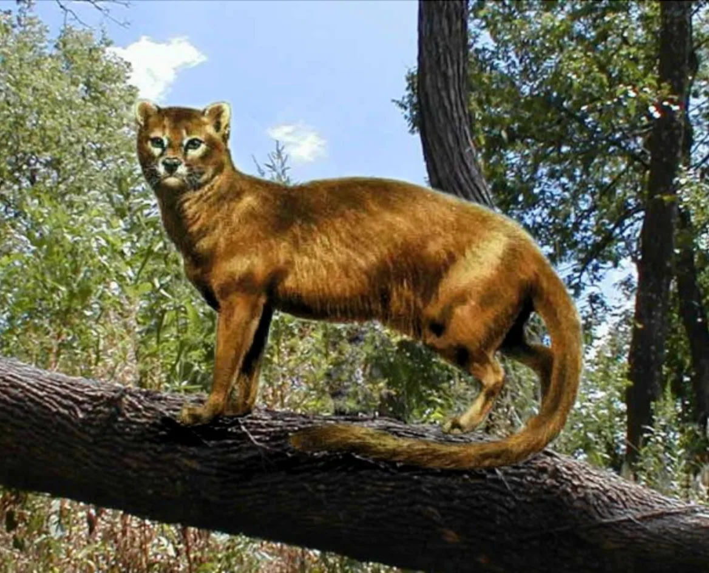
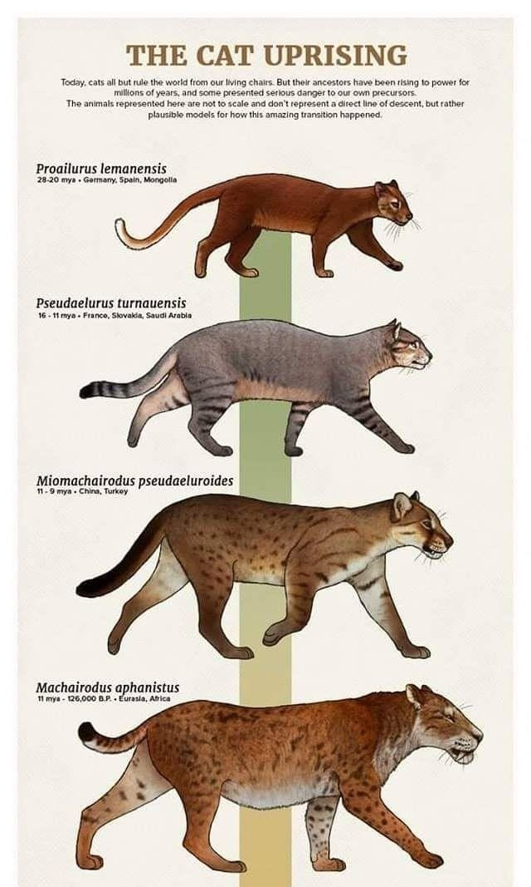

Classification
Carnivora → Felidae → Proailurinae → Proailurus. Three species are recognised: P. lemanensis (the type), P. major and P. bourbonnensis.

Plate I · Type Specimen
Proailurus
The earliest animal recognized as a true cat. ~25 million years ago.
Twenty-five million years before anyone thought to put a cat on the internet, there was one cat. Nine kilograms, long-tailed, sharp-clawed, half its life spent in the trees of Oligocene Europe. From this lineage came the cats that followed — sabre-tooths, lions, lynx, and eventually the one asleep on your keyboard.

Proailurus is the earliest animal palaeontologists recognise as a true cat, and it sits at the root of the family tree every living cat hangs from. This is not a story written for a token — it is in the literature, and here is the literature.
Plate II
In 1879 the French palaeontologist Henri Filhol gave a name to a small carnivore pulled from the limestone of central France. He called it Proailurus — “before the cat.” In outline it would have looked like a civet: low, long, supple, built to move along a branch. But the teeth were wrong for a civet. The teeth were a cat's.
It is now placed in its own subfamily, Proailurinae, at the base of the family Felidae, and is widely regarded as the first true cat — the animal from which Pseudaelurus, the sabre-tooths, the great cats and the small cats are thought to descend. Everything below is a footnote to this one animal.

Carnivora → Felidae → Proailurinae → Proailurus. Three species are recognised: P. lemanensis (the type), P. major and P. bourbonnensis.
Late Oligocene into the Miocene — roughly 25 million years ago, with the genus spanning something like 34 to 20 Mya depending on which material is included.
P. lemanensis weighed about 9 kg (20 lb) — a shade bigger than a house cat. P. major reached some 23 kg; P. bourbonnensis stayed at 7–10 kg.
A long tail for balance, large forward-set eyes, and sharp, retractile claws — the same mechanism a cat uses today. Compact, low-slung, built like a small cougar.
At least partly arboreal. A climbing ambush hunter of the warm, closed forests that covered Europe before the grasslands arrived.
Saint-Gérand-le-Puy and Quercy in France; Wiesbaden-Amöneburg and Budenheim in Germany; further material from Spain, Mongolia and China.
Plate III
Sixty-six million years, abridged
An asteroid ends the non-avian dinosaurs. The mammals inherit an empty world and begin to fill it.
Small tree-climbing predators called miacids throw off a new branch — the order Carnivora. Everything with a carnassial tooth starts here.
Nine kilograms of retractile claw and forest patience. Not quite the cat we know, but the first animal palaeontologists are willing to call one.
A lynx-sized successor spreads out of Europe and crosses into North America, ending the long “Cat Gap” in that continent's fossil record. Here the family divides: the Machairodontinae — the sabre-tooths — on one side, and, by way of Styriofelis, the Felinae on the other. Every cat alive is on the second branch.
A skull described from Tibet in 2013 pushes the origin of the big cats back past 4.4 million years — and points to Asia, not Africa, as their homeland.
Panthera spelaea parts ways with the modern lion and takes Ice Age Europe, Britain included. Palaeolithic painters put it on cave walls.
Near Eastern wildcats follow the mice into the grain stores of the Fertile Crescent — and stay. Nobody sets out to domesticate them.
After tens of millions of years the machairodonts run out. The branch that kept its ordinary teeth is the branch that survives.
Forty species of wild cat are recognised. One further species has spread to every continent people live on by being extremely good at being looked after.

Plate IV
What the first cat gave rise to
The explorer
A forest hunter of small herbivores that walked out of Eurasia and into North America, closing the Cat Gap. From it come both the sabre-tooths and the ancestors of every modern cat.
The sabre-tooth
Stocky, heavily muscled, built to ambush and hold large prey rather than run it down. Hundreds of individuals have been recovered from the La Brea tar pits.
The scimitar-tooth
Found on five continents. Shorter-fanged and longer-limbed than Smilodon, and genomic evidence suggests it may have hunted in groups.
The shark-tooth
Its serrated teeth are set in a pattern closer to a shark's than a cat's — consistent with a bite-and-retreat strategy: take a mouthful, wait.
The cave lion
As large as a modern lion and ranging as far as Britain, taking reindeer and bear cubs. We know its posture from the people who painted it.
Still here
No sabres, no bulk, no continent-spanning kill strategy. Just a small ambush predator that worked out humans keep the grain — and therefore the mice — in one place.
Plate V
Or: how they got in
Around ten thousand years ago people in the Fertile Crescent started storing grain. Grain draws rodents; rodents draw Near Eastern wildcats, Felis lybica. The cats that could tolerate a village at close quarters ate better than the cats that could not, and that tolerance was passed on. No one was breeding them. There was no project. The animal simply moved in and stayed.
This is why domestic cats are so unlike dogs, cattle or horses: they were not selected for anything. Living alongside us left its mark on their genome all the same — in genes tied to fear response and to learning from food rewards, which is roughly a geneticist's way of saying less skittish, more bribable.
The rest is distribution. Cats travelled on grain barges and trading ships, through Egypt, across the Mediterranean, and eventually everywhere. The body plan barely changed. A house cat is still, structurally, a small ambush predator built on a design that has been working since Proailurus.
Plate VI
Acquisition record & terms
| Total supply | 1,000,000,000 |
|---|---|
| Buy / sell tax | 0% · 0% |
| Liquidity | Burned |
| Mint authority | Revoked |
| Distribution | Fair launch. No presale, no team allocation. |
Install a Solana wallet — Phantom or Solflare — and write the seed phrase down on paper. Never type it into anything that asks for it.
Buy SOL on any exchange and send it to your wallet address. Keep a little spare for network fees.
Open Jupiter or Raydium, paste the contract address above, check it character for character against this page, and swap.
The genus survived the Oligocene, the Miocene and the Cat Gap. Consider matching its time horizon.
Plate VII
The dig, in four chapters
Chapter I
Chapter II
Chapter III
Chapter IV
Plate VIII
Everything above is drawn from these